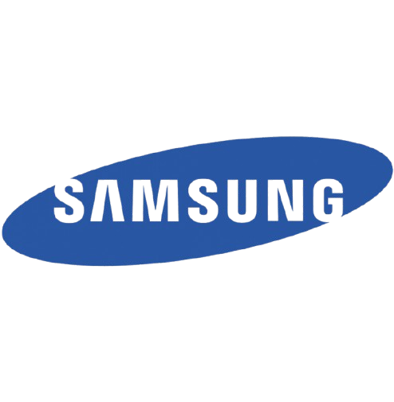

|
Alfred Cueva I am a Masters Student in Robotics & AI at Georgia Tech. Currently, I am a Researcher at the LIDAR Lab supervised by Prof. Ye Zhao and Zhaoyuan Gu on learning-based control and motion planning for embodied AI. My work spans the full robotics pipeline from algorithm design and simulation to real-world deployment, developing scalable sim-to-real frameworks for loco-manipulation tasks in real world environments. Previously, I worked at Samsung as a Robotics & ML Software Engineer for 2 years, where I led end-to-end development of autonomous systems, from perception and motion planning to real-world deployment on various robots. I received my Bachelors in Mechanical Engineering from Seoul National University during which I was a Research Intern at Dynamic Robotics System Lab, advised by Prof. Jaeheung Park and Dr. Daegyu Lim focusing on model-based priors guided Reinforcement Learning for legged robots. I also interned at Soft Robotics & Bionics Lab under the guidance of Prof. Yong-Lae Park on soft robotic multi-modal sensing for industrial robots. I also co-organized a non-profit organization dedicated to AI education, AI Tech Play, and hosted the first nationwide AI camp focused on autonomous racing competitions for high school students. I'm currently looking for internships, feel free to reach out! Fun Fact: I am fluent in 4 languages.
|

|
Current Position |
|
|
Georgia Institute of Technology
Graduate Researcher - LIDAR Lab | Laboratory for Intelligent Decision and Autonomous Robots Aug 2024 - Present
Researching generalizable robot policies for long-horizon, contact-rich tasks, leveraging Reinforcement Learning, diffusion models, motion planning, whole-body control, and sim-to-real transfer for humanoid loco-manipulation.
PyTorch · Isaac Sim/Lab · USD · Docker · VR Systems · MuJoCo · Diffusion Models · PPO/SAC |
Experience |
|  |
Samsung
Robotics & ML Software Engineer Mar 2024 - Aug 2025 (1 yr 6 mos)
Spearheaded production-grade YOLOv8 perception system for mobile robots, achieving 92% detection accuracy through end-to-end dataset creation (10K+ images), training, on-device optimization, and CI/CD integration for continuous deployment.
PyTorch · ROS2 · Isaac Sim · YOLOv8 · SLAM · Embedded ML · CI/CD |
|
Samsung
Computer Vision Intern Jul 2023 - Aug 2023 (2 mos)
Developed real-time heat anomaly detection system for semiconductor manufacturing equipment, designing custom ML model architectures and GPU-accelerated data pipelines to process large-scale multi-sensor streams for low-latency decision-making.
PyTorch · SAM · OpenCV · GPU Optimization · Sensor Fusion · Real-Time Systems |
|
|
Seoul National University
Research Assistant - Dynamic Robotics Systems Lab, advised by Prof. Jaeheung Park Dec 2022 - Feb 2024 | Outstanding Thesis Award (1/120) Proposed novel model-free RL sim-to-real framework for energy-efficient whole-body control, achieving 19% speed improvement and 22% energy cost reduction in bipedal robot. Designed meta-RL optimization framework combining model-free learning with physics-based actuator models to optimize energy consumption and parallel elastic actuator parameters for weak actuation scenarios. MuJoCo · PyTorch · MAML · Model-Based RL |
|
|
Seoul National University
Research Intern - Soft Robotics & Bionics Lab, advised by Prof. Yong-Lae Park Mar 2021 - Aug 2021
Developed software and system integration for capacitive touch-sensing grid used as force-control interface for industrial sewing robots. Improved robot responsiveness and control precision, increasing sewing operation speed by 20% through real-time feedback optimization.
Python · C++ · Sensor Fusion · Capacitive Sensing · Real-Time Control |
ResearchMy research centers on robot learning for contact-rich manipulation in real-world environments. I develop scalable frameworks that combine physics-aware learning with learned representations for long-horizon reasoning, enabling robots to acquire dexterous and agile motor skills. Ultimately, I aim to bridge the gap between human and robot capabilities—empowering machines to perform complex tasks in unpredictable settings with human-like adaptability. |

|
Humanoid Loco-manipulation via Joint Optimization of Diffusion Policy and Reinforcement Learning
Under Review for RA-L Developed joint optimization framework combining diffusion policies with reinforcement learning for humanoid loco-manipulation. The approach fine-tunes offline diffusion policies with online RL interaction, adapting to new scenarios beyond training data. Achieved 85% success rate on door opening, box transport (up to 5kg), and table climbing tasks on Booster humanoid platform. System demonstrates robust whole-body coordination in contact-rich scenarios beyond training distribution. PyTorch · MuJoCo · IsaacGym · Diffusion Models · PPO · Whole-Body Control · Sim-to-Real |

|
Autonomous Drilling Robot for Cluttered environments
Project at Samsung (Smart Construction Robotics Challenge Winner) Led development of autonomous drilling robot for construction sites, deploying rule-based computer vision and motion planning for precise surface drilling with ±2mm accuracy. System handles 100+ kg payloads and operates in GPS-denied cluttered environments, reducing human exposure to hazardous tasks by 80%. Deployed across 5+ construction sites. ROS2 · OpenCV · Motion Planning · Force Control [Coverage] |

|
Adaptive AMR for Safe and Efficient Material Transport
Project at Samsung, in collaboration with Hyundai Robotics Led development and deployment of adaptive AMR fleet (300+ robots) for material transport in construction sites. Implemented safety-aware navigation achieving 99.2% successful delivery rate in dynamic, GPS-denied environments. System handles 200kg payloads with real-time obstacle avoidance and multi-robot coordination. ROS2 · LiDAR SLAM · Nav2 · Fleet Management · Motion Planning [Coverage] |

|
RL-Policy Guided Optimal Design of Parallel Elastic Actuator for Weak Actuation of Bipedal Robot
Alfred Cueva, Jaeheung Park, Yong-Lae Park Bachelor's Thesis (Outstanding BS Thesis Presentation Award) Developed meta-RL optimization framework combining model-free learning with physics-based actuator models for bipedal locomotion. Achieved 40% energy reduction in simulated bipedal walking while optimizing parallel elastic actuator stiffness parameters. Framework demonstrated successful sim-to-real transfer potential for weak actuation scenarios. MuJoCo · PyTorch · MAML · Model-Based RL |
Projects |

|
Diffusion Policy for Multi-Step Block Assembly
Alfred Cueva*, Seok Joon Kim*, Kyle Kam* Graduate Course Project (Deep Reinforcement Learning, Fall 2025) Implemented transformer-based diffusion policies for long-horizon visuomotor manipulation, focusing on sequential pick-and-place and multi-block assembly. Integrated camera-calibrated ArUco-based 6DoF pose estimation with action diffusion for closed-loop execution on UR10e robot. Achieved 85% success rate on 3-block assembly tasks with 200+ teleoperated expert demonstrations. PyTorch · LeRobot · ROS · OpenCV · ArUco Markers · UR10e |
|
Multi-Modal Perception for Autonomous Maze Navigation
Alfred Cueva*, Carlos Gaeta* Graduate Course Project (Introduction to Autonomy, Fall 2025) Designed end-to-end ROS2 autonomous navigation stack integrating LiDAR-based Bug0 obstacle avoidance with vision-based traffic sign recognition using KNN classifier. Deployed on TurtleBot3 platform for autonomous maze navigation with real-time sign detection and adaptive waypoint generation. Achieved 95% sign recognition accuracy across 10+ maze configurations. ROS · Python · OpenCV · TensorFlow · LiDAR · TurtleBot3 [Code] |
|

|
Reinforcement Learning Agent for Rapid Task Adaptation
Alfred Cueva*, Gene Chung*, Taehung Kim*, Sumin Ye* Graduate Course Project (Reinforcement Learning, Spring 2023) Developed Task-Invariant Agent (TIA) network for multi-task RL, enabling rapid adaptation to new tasks using model dynamics. The architecture integrates a modified DQN policy network, an encoder for latent task representation from experience sequences, and a model predictor for system dynamics. Achieved 3x faster adaptation to new reward functions compared to baseline DQN, demonstrating robust generalization across CartPole task variants. PyTorch · OpenAI Gym · DQN · Meta-Learning |

|
Constrained 2D Online Bin Packing Problem using Reinforcement Learning
Alfred Cueva Graduate Course Project (Combinatorial Optimization, Spring 2023) Implemented Heuristics Integrated Deep RL approach for online 2D bin packing with placement constraints. Trained PPO agent to learn optimal packing strategies that outperform traditional heuristics. Achieved 15% improvement in space utilization over baseline greedy algorithms. PyTorch · PPO · OpenAI Gym · Combinatorial Optimization |

|
Control Techniques for Humanoid Robots
Alfred Cueva Graduate Course Project (Theory and Practice of Humanoid Walking Control, Fall 2022) Implemented 10+ humanoid control algorithms including ZMP-based walking pattern generation, Linear Inverted Pendulum Model, preview control, and whole-body operational space control. Developed CoM estimation using complementary filters and capture point-based stabilization for dynamic walking on simulated bipedal robots. C++ · MATLAB · Whole-Body Control · QP Solvers · Trajectory Optimization [Code] |

|
RC Car Autonomous Driving
Alfred Cueva*, Max Acosta* Graduate Course Project (Introduction to Intelligent Systems, Spring 2023) Developed autonomous driving system for RC Car Racing Challenge using LiDAR-only perception for mapless navigation. Implemented behavior cloning with Gaussian Process Regression to learn driving policy from expert demonstrations. Trained end-to-end control policy mapping raw sensor observations to steering and throttle commands. Achieved top-3 finish in class competition with average lap speed of 2.5 m/s while maintaining safe wall clearance of 15cm. Python · PyTorch · LiDAR · Gaussian Process · Behavior Cloning [Code] |

|
Soil Sensing with Machine Learning and Satellite Imagery
Alfred Cueva*, Andy Kim* Graduate Course Project (Deep Learning, Fall 2023) (Funded by National Research Foundation) Led research estimating soil health from satellite imagery for agricultural policy enforcement. Managed $8K grant and directed field surveys across 50+ sites, collecting 100GB of GIS and satellite data. Engineered 30+ novel features from multi-spectral satellite data and GIS sources, training machine learning models (XGBoost, Random Forest) for regression. Achieved 60% improvement over baseline estimates (R² = 0.78) using ensemble methods. Python · Scikit-learn · XGBoost · Sentinel-2 · GIS [Code] |

|
Video Generation from Single-Image Input
Alfred Cueva Graduate Course Project (Computer Vision, Fall 2021) Developed novel video generation algorithm that synthesizes realistic video sequences from a single input image using sequential structure learning. Integrated optical flow estimation with temporal consistency constraints to eliminate awkward motion artifacts common in frame-by-frame generation approaches. PyTorch · Optical Flow · CNNs · Video Synthesis [Report] |
Technical Skills |
|
Robotics & Control: ROS/ROS2, MuJoCo, IsaacGym, Isaac Sim/Lab, USD, Gazebo, MoveIt, Whole-Body Control, Model Predictive Control, Trajectory Optimization Machine Learning: PyTorch, TensorFlow, Diffusion Policy, Reinforcement Learning (PPO, SAC, TD3), Imitation Learning, Model-Based RL, Meta-Learning Computer Vision: OpenCV, YOLO, SAM, NeRF Pipelines, 3D Reconstruction, Visual SLAM, Camera Calibration, ArUco Markers, Depth Estimation Programming & Tools: Python, C++, MATLAB, Git, Docker, Kubernetes, Linux, CUDA, CI/CD, Real-Time Systems, Embedded Systems Hardware & Platforms: Booster T1, Unitree G1, Digit, Franka Panda, UR10e, Tabletop Manipulators, AMRs, LiDAR Systems, RGB-D Cameras, VR Systems |
|
Template from Jon Barron. |